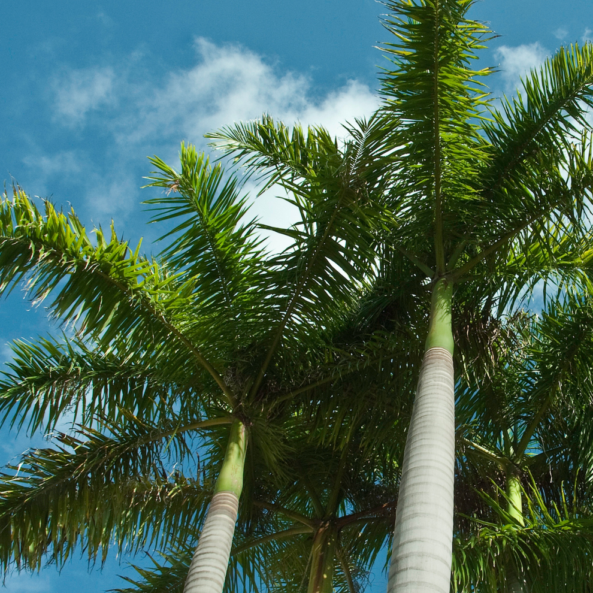
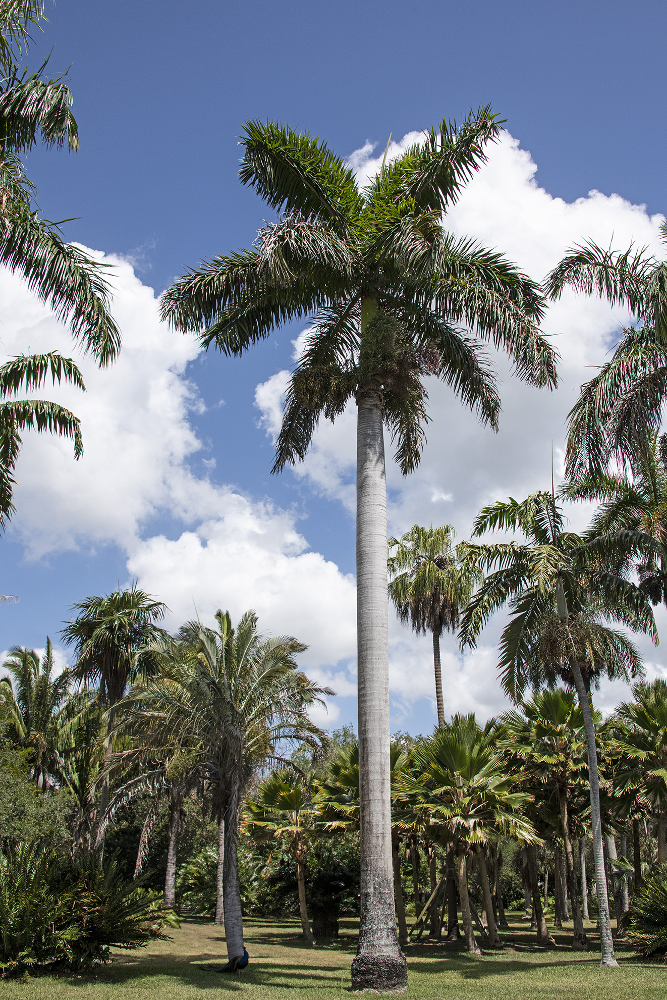

The Royal Palm is widely considered one of the most beautiful and majestic palm species in the world. Native to Florida, Mexico, and the Caribbean, it has been embraced globally as a premier ornamental tree for high-end landscapes, botanical gardens, and schools.
When young, its signature smooth grey trunk is elegantly concealed by a bright green "crownshaft" made of tightly wrapped leaf bases. As the tree matures, these lower fronds naturally drop, revealing the stately, stone-like column beneath.
Features magnificent, feathery (pinnate) fronds that gracefully arch outwards, reaching lengths of up to 4 meters.
In ideal, warm conditions, this incredibly fast-growing species can reach towering heights of 20 to 30 meters.
Thrives in full sunlight and warm temperatures, making it perfectly suited for the sunny, semi-arid climate of Rajasthan.
Beyond its beauty, the tree produces flowers that are a rich nectar source for local bees and bats.
